Code
library(dplyr)
library(tidyr)
library(ggplot2)
library(purrr)
library(tibble)
library(readr)
library(rlang)Supplement 1 showed that overlapping hierarchical phase catalogues produce systematic artificial structure in aoristic reconstructions even when the underlying event process is uniform. Supplement 2 applied different reconstruction approaches to this uniform case and showed that the phase-corrected aoristic reconstruction substantially reduces both the reconstruction error and the coupling between reconstruction and phase overlap.
This supplement addresses the following question:
How do the standard proportional aoristic, the Monte Carlo aoristic and the phase-corrected aoristic reconstructions behave when the true underlying temporal signal is not uniform?
The uniform case isolates the bias, but real event intensities rise and fall and form peaks or plateaus.
We therefore simulate several known signals and reconstruct them with the same overlapping catalogue, to see whether the phase correction remains helpful and under which conditions it dampens, amplifies or shifts real structure.
The repeated simulations are run with scripts/run_s3_non_uniform_signal_sensitivity.R (make sensitivity), the Baorista example fits with scripts/run_s3_baorista_examples.R (make refresh-s3-baorista). This document reads their results from outputs/. The full reproduction workflow is described in the README.
library(dplyr)
library(tidyr)
library(ggplot2)
library(purrr)
library(tibble)
library(readr)
library(rlang)set.seed(42)
options(knitr.kable.NA = "–")
dir.create("outputs", showWarnings = FALSE, recursive = TRUE)
dir.create("figures", showWarnings = FALSE, recursive = TRUE)
source("R/aoristic_helpers.R")
time_min <- -4100
time_max <- -1800
year_grid <- seq(time_min, time_max - 1, by = 1)
bin_width <- 50L
n_events <- 1000L
n_runs <- 100L
n_mc <- 100L
signal_patterns <- s3_signal_patterns
signal_labels <- c(uniform = "Uniform", linear_increase = "Linear increase",
linear_decline = "Linear decline",
exponential_increase = "Exponential increase",
exponential_decline = "Exponential decline",
early_peak = "Early peak", single_peak = "Single central peak",
late_peak = "Late peak", two_peaks = "Two peaks",
multi_peak = "Multiple peaks", plateau = "Plateau")This supplement uses the same synthetic phase catalogue as the previous supplements.
phase_file <- "outputs/s1_synthetic_phase_catalogue.csv"
if (!file.exists(phase_file)) stop("Render Supplement 1 first.")
phase_catalogue <- read_csv(phase_file, show_col_types = FALSE) |>
mutate(from = as.integer(from), to = as.integer(to), width = to - from)if (!file.exists("outputs/s3_results.rds")) {
stop("Run scripts/run_s3_non_uniform_signal_sensitivity.R first.")
}
truth_curves <- read_csv("outputs/s3_ground_truth_curves.csv",
show_col_types = FALSE)
example_curves <- read_csv("outputs/s3_example_curves_run_1.csv",
show_col_types = FALSE)
s3_metrics <- read_csv("outputs/s3_sensitivity_metrics.csv",
show_col_types = FALSE)
s3_summary <- read_csv("outputs/s3_sensitivity_summary.csv",
show_col_types = FALSE)
s3_best_rmsd <- read_csv("outputs/s3_best_method_by_run_rmsd.csv",
show_col_types = FALSE)
s3_best_overlap_bias <- read_csv(
"outputs/s3_best_method_by_run_overlap_bias.csv",
show_col_types = FALSE
)
s3_run_metadata <- read_csv("outputs/s3_run_metadata.csv",
show_col_types = FALSE)
s3_meta_value <- function(setting) {
s3_run_metadata$value[s3_run_metadata$setting == setting]
}
n_runs <- as.integer(s3_meta_value("n_runs"))
n_events <- as.integer(s3_meta_value("n_events"))s3_baorista_curves <- read_csv("outputs/s3_baorista_example_curves_run_1.csv",
show_col_types = FALSE)
s3_baorista_metrics <- read_csv("outputs/s3_baorista_example_metrics_run_1.csv",
show_col_types = FALSE)
s3_baorista_metric_posterior <- read_csv(
"outputs/s3_baorista_example_metric_posterior_summary_run_1.csv",
show_col_types = FALSE
)
s3_baorista_metric_draws <- read_csv("outputs/s3_baorista_metric_posterior.csv",
show_col_types = FALSE) |>
pivot_longer(c(rmsd, mae, correlation, overlap_attributable_rmsd),
names_to = "metric", values_to = "value")As in Supplement 2, Baorista (Crema 2025) is included as a model-based benchmark. It estimates the probability of events per time block under an intrinsic conditional autoregressive (ICAR) prior. As in the main text, we use an exponential prior with rate 1 on the ICAR scale parameter. Baorista was fitted to one example run per signal pattern, so these results should be interpreted as example-run benchmarks and are not part of the full repeated-simulation summary.
The signal shapes are test scenarios with known structure, not population histories:
The contrast between flat signals, monotonic trends and localised peaks shows whether a method works only for a flat ground truth.
p_truths <- truth_curves |>
mutate(pattern = factor(pattern, levels = signal_patterns)) |>
ggplot(aes(x = year, y = true)) +
geom_line(linewidth = 0.8) +
facet_wrap(~ pattern, scales = "free_y", labeller = as_labeller(signal_labels)) +
labs(
title = "Ground-truth signal shapes used in Supplement 3",
subtitle = "Each curve is known by construction and used as the evaluation target",
x = "Year BCE/CE",
y = "Normalised event intensity"
) +
plot_theme(base_size = 8)
p_truths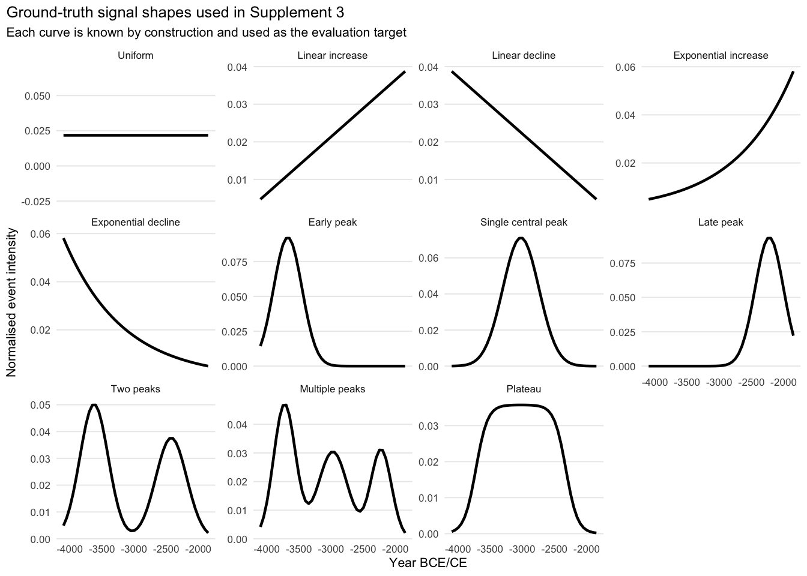
ggsave("figures/s3_ground_truth_signal_shapes.png", p_truths, width = 11,
height = 7.5, dpi = 600)In each case, the ground truth is known, so the reconstruction methods can be evaluated directly against the generating signal.
The same procedure is applied to each signal pattern and each simulation run. First, a set of event dates is sampled from the underlying ground-truth distribution of the signal pattern. Each event is then assigned a compatible phase label from the synthetic phase catalogue, and the same labels are used for all methods. From this point on, the reconstruction methods have access only to the observed phase labels and their chronological intervals, not to the true simulated event dates.
The observed intervals are then processed with three reconstruction methods:
The standard proportional aoristic procedure distributes the probability mass of each event uniformly over its observed interval. The Monte Carlo aoristic approach repeatedly draws random dates within the intervals and produces a mean curve together with uncertainty ranges. The phase-corrected aoristic reconstruction modifies the weights within the intervals according to the overlap structure of the (observed) phase catalogue.
All methods are then compared with the known ground truth. In addition, we assess how strongly the reconstruction errors are coupled to the overlap structure of the phase catalogue.
The medians per signal pattern and the tables of the best method per run are given in the sections below.
The following plots show one example run per signal pattern.
plot_examples <- example_curves |>
left_join(filter(s3_baorista_curves, run == 1) |>
select(pattern, year, baorista),
by = c("pattern", "year")) |>
select(pattern, year, Ground_truth = true, Standard_aoristic = standard,
Monte_Carlo_mean = mc_mean, Phase_corrected = phase_corrected,
baorista) |>
pivot_longer(cols = -c(pattern, year), names_to = "method",
values_to = "value") |>
mutate(
method = recode(method, Ground_truth = "Ground truth",
Standard_aoristic = "Standard aoristic",
Monte_Carlo_mean = "Monte Carlo mean",
Phase_corrected = "Phase-corrected", baorista = "Baorista"),
method = factor(
method,
levels = c("Ground truth", "Standard aoristic", "Monte Carlo mean",
"Phase-corrected", "Baorista")
),
pattern = factor(pattern, levels = signal_patterns)
)
method_colours <- c("Ground truth" = "black", "Standard aoristic" = "#D55E00",
"Monte Carlo mean" = "#0072B2",
"Phase-corrected" = "#009E73", "Baorista" = "#CC79A7")
method_linetypes <- c("Ground truth" = "solid", "Standard aoristic" = "solid",
"Monte Carlo mean" = "longdash",
"Phase-corrected" = "solid", "Baorista" = "dotdash")
p_examples <- ggplot(
plot_examples,
aes(x = year, y = value, colour = method, linetype = method)
) +
geom_line(linewidth = 0.75, na.rm = TRUE) +
scale_colour_manual(values = method_colours, drop = FALSE) +
scale_linetype_manual(values = method_linetypes, drop = FALSE) +
facet_wrap(~ pattern, scales = "free_y", labeller = as_labeller(signal_labels)) +
labs(
title = "Example reconstructions under different ground-truth signal shapes",
subtitle = "One simulation run per signal pattern",
x = "Year BCE/CE",
y = "Normalised intensity"
) +
plot_theme(base_size = 8)
p_examples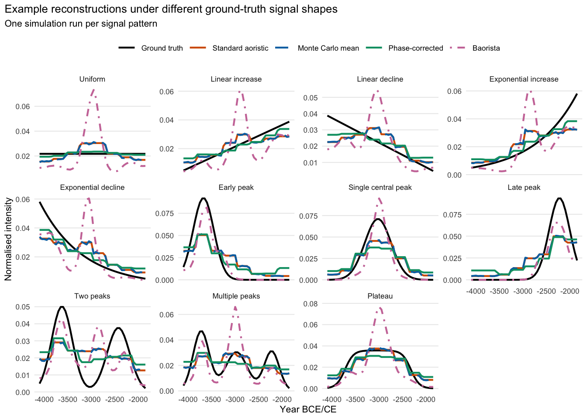
In the uniform case, a good reconstruction is flat. For non-uniform signals, it should be unaffected by the catalogue structure and should neither smooth nor shift the real signal.
The standard and Monte Carlo mean curves are again almost identical.
In most cases, the phase-corrected reconstruction reduces the coupling between phase overlap and the reconstructed signal, although the size of the gain differs between signal patterns. For the asymmetric early and late peaks, the correction still yields the lowest RMSD in almost all runs (99% and 93% of runs, respectively), but only by a small margin (the median RMSD of the phase-corrected reconstruction is about 0.97 times that of the standard reconstruction). Dampening of the true signal occurs mainly for the central single peak and the plateau, where the true structure coincides with particularly high or low phase overlap.
For each signal pattern, the Monte Carlo band shows the spread from repeated draws within the observed intervals.
plot_mc_examples <- example_curves |>
mutate(pattern = factor(pattern, levels = signal_patterns))
p_mc_examples <- ggplot(plot_mc_examples, aes(x = year)) +
geom_ribbon(aes(ymin = mc_q05, ymax = mc_q95), alpha = 0.20, na.rm = TRUE) +
geom_line(aes(y = mc_mean), linewidth = 0.7, na.rm = TRUE) +
geom_line(aes(y = true), linewidth = 0.7, linetype = "dashed", na.rm = TRUE) +
facet_wrap(~ pattern, scales = "free_y", labeller = as_labeller(signal_labels)) +
labs(
title = "Monte Carlo aoristic uncertainty under different signal shapes",
subtitle = paste0("Ribbon: 5th to 95th percentile interval across ", n_mc, " iterations"),
x = "Year BCE/CE",
y = "Normalised intensity"
) +
plot_theme(base_size = 8)
p_mc_examples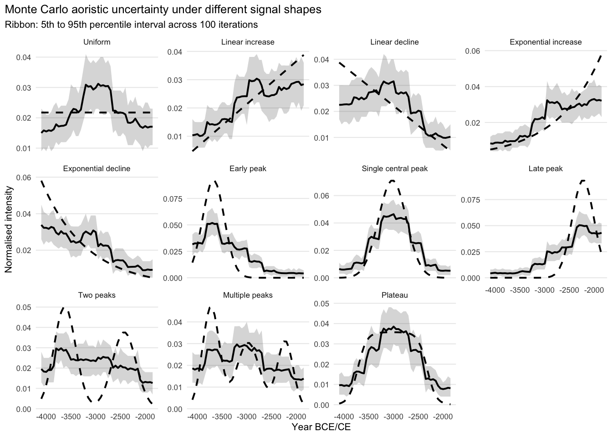
Baorista provides posterior uncertainty intervals. The following plots show the Baorista benchmark curve together with its posterior uncertainty interval for the same example runs as above.
baorista_uncertainty_examples <- example_curves |>
select(pattern, year, true) |>
left_join(filter(s3_baorista_curves, run == 1), by = c("pattern", "year")) |>
mutate(pattern = factor(pattern, levels = signal_patterns),
lower = pmax(0, pmin(baorista_hpdi95_lower, baorista_hpdi95_upper)),
upper = pmax(0, pmax(baorista_hpdi95_lower, baorista_hpdi95_upper))) |>
filter(is.finite(year), is.finite(true), is.finite(baorista),
is.finite(lower), is.finite(upper))
p_baorista_examples <- ggplot(baorista_uncertainty_examples, aes(x = year)) +
geom_ribbon(aes(ymin = lower, ymax = upper), alpha = 0.20, na.rm = TRUE) +
geom_line(aes(y = baorista), linewidth = 0.7, na.rm = TRUE) +
geom_line(aes(y = true), linewidth = 0.7, linetype = "dashed", na.rm = TRUE) +
facet_wrap(~ pattern, scales = "free_y", labeller = as_labeller(signal_labels)) +
labs(
title = "Baorista posterior uncertainty under different signal shapes",
subtitle = "Ribbon: 95% HPDI; dashed line: known ground truth",
x = "Year BCE/CE",
y = "Normalised intensity"
) +
plot_theme(base_size = 8)
p_baorista_examples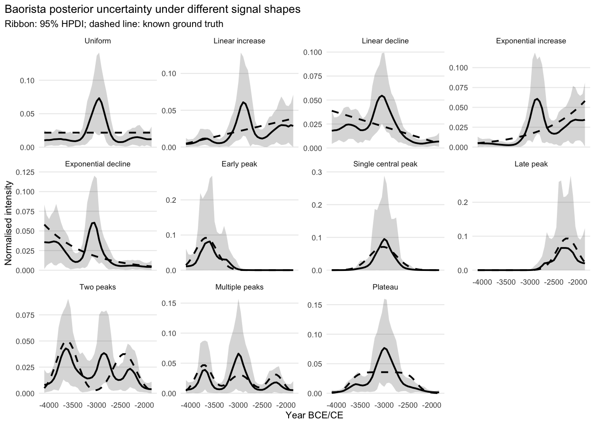
Each example-run fit uses four MCMC chains. A fit is accepted if the largest Gelman–Rubin statistic \(\hat R\) (Gelman and Rubin 1992) does not exceed the criterion given in the table. Otherwise, the model is refitted with twice the number of iterations (up to three attempts in total).
s3_baorista_diagnostics_file <- "outputs/s3_baorista_diagnostics.csv"
read_csv(s3_baorista_diagnostics_file, show_col_types = FALSE) |>
filter(diagnostic %in% c(
"max_rhat", "min_ess", "niter", "rhat_criterion", "n_attempts", "converged"
)) |>
select(pattern, diagnostic, value) |>
pivot_wider(names_from = diagnostic, values_from = value) |>
arrange(match(pattern, signal_patterns)) |>
mutate(
pattern = gsub("_", " ", pattern),
pattern = paste0(toupper(substr(pattern, 1, 1)), substring(pattern, 2)),
across(any_of(c("max_rhat", "rhat_criterion")),
~ as.character(round(as.numeric(.x), 3))),
across(
any_of(c("min_ess", "niter", "n_attempts")),
~ format(round(as.numeric(.x)), big.mark = ",", scientific = FALSE, trim = TRUE)
),
across(any_of("converged"), ~ if_else(as.numeric(.x) == 1, "yes", "no"))
) |>
select(any_of(c(
"pattern", "max_rhat", "rhat_criterion", "min_ess", "niter", "n_attempts", "converged"
))) |>
rename(any_of(c(`Signal pattern` = "pattern", `Max R-hat` = "max_rhat",
`R-hat criterion` = "rhat_criterion", `Min ESS` = "min_ess",
Iterations = "niter", Attempts = "n_attempts",
Converged = "converged"))) |>
(\(d) kbl(d, align = c("l", rep("r", ncol(d) - 1))))()| Signal pattern | Max R-hat | R-hat criterion | Min ESS | Iterations | Attempts | Converged |
|---|---|---|---|---|---|---|
| Uniform | 1.019 | 1.05 | 802 | 50,000 | 1 | yes |
| Linear increase | 1.018 | 1.05 | 348 | 50,000 | 1 | yes |
| Linear decline | 1.011 | 1.05 | 716 | 50,000 | 1 | yes |
| Exponential increase | 1.019 | 1.05 | 781 | 50,000 | 1 | yes |
| Exponential decline | 1.019 | 1.05 | 642 | 50,000 | 1 | yes |
| Early peak | 1.125 | 1.05 | 606 | 200,000 | 3 | no |
| Single peak | 1.029 | 1.05 | 369 | 50,000 | 1 | yes |
| Late peak | 1.121 | 1.05 | 359 | 200,000 | 3 | no |
| Two peaks | 1.014 | 1.05 | 799 | 50,000 | 1 | yes |
| Multi peak | 1.042 | 1.05 | 500 | 50,000 | 1 | yes |
| Plateau | 1.022 | 1.05 | 871 | 50,000 | 1 | yes |
The fits for early peak and late peak do not meet the criterion even after 200,000 iterations (largest R-hat 1.12 and 1.12). Because R-hat barely changes with longer chains, further iterations are unlikely to help; the non-convergence possibly concerns blocks far from the peak, where the posterior probability is close to zero and only weakly identified. These fits are shown for completeness but should be read with caution.
Because this is a simulation, the generating curve is known, and we can compare each method with the true signal. The relevant metrics are the root-mean-square deviation (RMSD), the mean absolute error (MAE) and the correlation with the true signal. Unlike the example runs above, these metrics are calculated across multiple realisations of each signal pattern.
metrics_plot <- s3_metrics |>
mutate(
pattern = factor(pattern, levels = signal_patterns),
method = factor(
method,
levels = c("Standard aoristic", "Monte Carlo mean", "Phase-corrected")
)
)
p_rmsd <- ggplot(metrics_plot, aes(x = method, y = rmsd)) +
geom_boxplot(outlier.alpha = 0.25) +
facet_wrap(~ pattern, scales = "free_y", labeller = as_labeller(signal_labels)) +
labs(title = "RMSD against known ground truth",
subtitle = paste0("Lower is better; n_runs = ", n_runs), x = NULL,
y = "RMSD") +
plot_theme(base_size = 8) +
theme(axis.text.x = element_text(angle = 45, hjust = 1),
legend.position = "none")
p_rmsd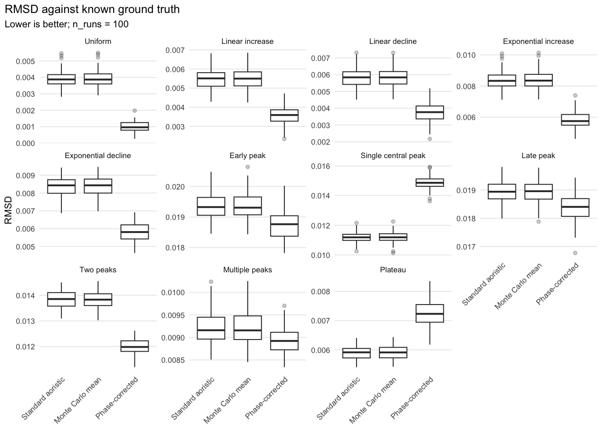
ggsave("figures/s3_rmsd_boxplot.png", p_rmsd, width = 11, height = 8, dpi = 600)p_mae <- ggplot(metrics_plot, aes(x = method, y = mae)) +
geom_boxplot(outlier.alpha = 0.25) +
facet_wrap(~ pattern, scales = "free_y", labeller = as_labeller(signal_labels)) +
labs(title = "MAE against known ground truth",
subtitle = paste0("Lower is better; n_runs = ", n_runs), x = NULL,
y = "MAE") +
plot_theme(base_size = 8) +
theme(axis.text.x = element_text(angle = 45, hjust = 1),
legend.position = "none")
p_mae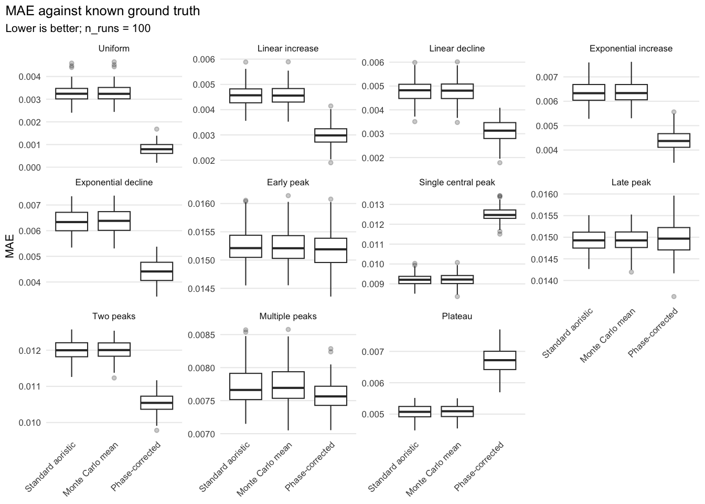
p_correlation <- ggplot(
metrics_plot |>
filter(!is.na(correlation)),
aes(x = method, y = correlation)
) +
geom_boxplot(outlier.alpha = 0.25) +
facet_wrap(~ pattern, scales = "free_y", labeller = as_labeller(signal_labels)) +
labs(title = "Correlation with known ground truth",
subtitle = paste0("Higher is better; n_runs = ", n_runs), x = NULL,
y = "Correlation") +
plot_theme(base_size = 8) +
theme(axis.text.x = element_text(angle = 45, hjust = 1),
legend.position = "none")
p_correlation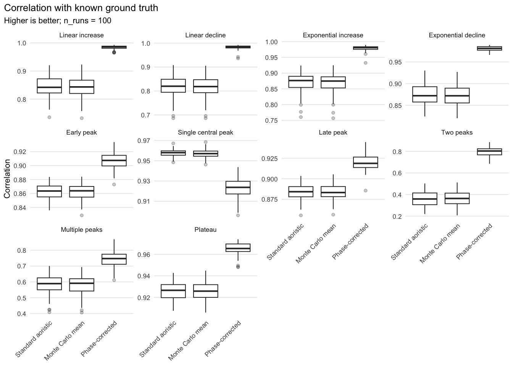
For the uniform signal, the correlation with the ground truth is undefined, because the true curve is constant. The uniform signal is therefore omitted from the correlation plot.
The uniform case reproduces Supplement 2. For non-uniform signals, the gain depends on how the true signal relates to the overlap structure. Where the two coincide, the correction also removes part of the real signal (see below).
Baorista was computed for only one selected simulation replicate per signal pattern. Its results are therefore not shown as an additional boxplot. The boxplots below describe the variation among repeated simulation realisations for the three aoristic methods. To permit a direct comparison on the same simulated dataset, the corresponding run-1 estimates of these methods are shown as individual points.
For Baorista, each evaluation metric was calculated separately for every normalised posterior temporal curve. The plotted Baorista point is the posterior median of the resulting metric distribution, and the vertical interval represents its 95% posterior credible interval. This interval describes posterior uncertainty conditional on the selected run and the Baorista model.
metric_levels <- c("RMSD", "MAE", "Correlation", "Overlap-attributable RMSD")
method_levels_with_baorista <- c("Standard aoristic", "Monte Carlo mean",
"Phase-corrected", "Baorista")
metric_name_lookup <- c(rmsd = "RMSD", mae = "MAE", correlation = "Correlation",
overlap_attributable_rmsd = "Overlap-attributable RMSD")
aoristic_metrics_long <- s3_metrics |>
select(pattern, run, method, rmsd, mae, correlation,
overlap_attributable_rmsd) |>
pivot_longer(cols = c(rmsd, mae, correlation, overlap_attributable_rmsd),
names_to = "metric", values_to = "value") |>
mutate(source = "Repeated aoristic simulations",
metric = recode(metric, !!!metric_name_lookup),
metric = factor(metric, levels = metric_levels),
method = factor(method, levels = method_levels_with_baorista),
pattern = factor(pattern, levels = signal_patterns))
aoristic_run_1_metrics <- aoristic_metrics_long |>
filter(run == 1) |>
mutate(source = "Aoristic example run")
baorista_metrics_long <- s3_baorista_metrics |>
filter(run == 1) |>
select(pattern, run, method, rmsd, mae, correlation,
overlap_attributable_rmsd) |>
pivot_longer(cols = c(rmsd, mae, correlation, overlap_attributable_rmsd),
names_to = "metric", values_to = "value") |>
mutate(source = "Baorista central-curve benchmark",
metric = recode(metric, !!!metric_name_lookup),
metric = factor(metric, levels = metric_levels),
method = factor(method, levels = method_levels_with_baorista),
pattern = factor(pattern, levels = signal_patterns))
baorista_metric_intervals <- s3_baorista_metric_posterior |>
filter(run == 1) |>
mutate(metric = recode(metric, !!!metric_name_lookup),
metric = factor(metric, levels = metric_levels),
method = factor("Baorista", levels = method_levels_with_baorista),
pattern = factor(pattern, levels = signal_patterns))
metric_comparison_with_baorista <- bind_rows(aoristic_metrics_long,
baorista_metrics_long)p_metric_comparison_with_baorista <- ggplot() +
geom_boxplot(data = aoristic_metrics_long, aes(x = value, y = method),
outlier.alpha = 0.20, na.rm = TRUE) +
geom_point(data = aoristic_run_1_metrics, aes(x = value, y = method),
shape = 21, size = 1.6, stroke = 0.5, na.rm = TRUE) +
geom_errorbar(data = baorista_metric_intervals,
aes(y = method, xmin = posterior_q025, xmax = posterior_q975),
width = 0.25, linewidth = 0.5, orientation = "y", na.rm = TRUE) +
geom_point(data = baorista_metric_intervals,
aes(x = posterior_median, y = method), shape = 23, size = 1.9,
stroke = 0.6, na.rm = TRUE) +
scale_y_discrete(drop = FALSE, limits = rev(method_levels_with_baorista),
labels = c("Standard aoristic" = "Standard",
"Monte Carlo mean" = "MC mean",
"Phase-corrected" = "Phase-corr.",
"Baorista" = "Baorista")) +
facet_grid(pattern ~ metric, scales = "free_x",
labeller = labeller(pattern = signal_labels)) +
labs(title = "Repeated aoristic metrics and Baorista example benchmark",
x = NULL, y = NULL) +
plot_theme(base_size = 8) +
theme(strip.text.y = element_text(angle = 0, hjust = 0),
panel.spacing.y = grid::unit(0.3, "lines"),
legend.position = "none")
p_metric_comparison_with_baorista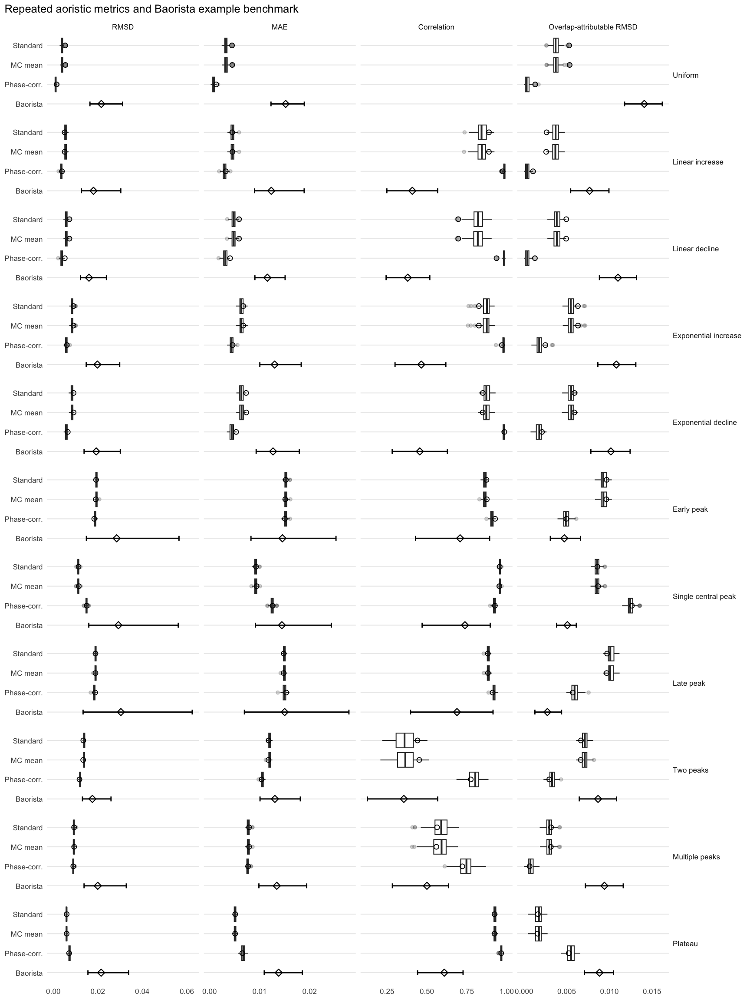
In the example runs, Baorista does not come closer to the known signal than the aoristic methods. By posterior-median RMSD it ranks behind all three for every signal pattern. The phase-corrected method provides the closest fit in nine of the eleven scenarios, including the uniform signal, all four monotonic trends, the early and late peaks, and the two- and multi-peak patterns. Only for the single-peak and plateau signals does another aoristic method provide the best point estimate.
Its posterior intervals show the range of curves compatible with the intervals under the model, but the whole metric distribution is displaced relative to the phase-corrected result, so propagating interval uncertainty does not remove the overlap bias.
For each signal pattern, we also rank the three aoristic run-1 reconstructions and the posterior-median Baorista result by RMSD, and calculate the share of Baorista posterior draws with a lower RMSD than the phase-corrected estimate for the same dataset. This share is conditional on run 1 and the fitted model, not an estimate across newly simulated datasets.
lower_is_better_metrics <- c("RMSD", "MAE", "Overlap-attributable RMSD")
higher_is_better_metrics <- "Correlation"
example_run_point_metrics <- aoristic_run_1_metrics |>
filter(is.finite(value)) |>
select(pattern, run, method, metric, value)
baorista_example_point_metrics <- baorista_metric_intervals |>
transmute(pattern, run,
method = factor("Baorista", levels = method_levels_with_baorista),
metric, value = posterior_median) |>
filter(is.finite(value))
example_run_point_metrics <- bind_rows(example_run_point_metrics,
baorista_example_point_metrics)
example_run_method_ranks <- example_run_point_metrics |>
group_by(pattern, metric) |>
mutate(
method_rank = case_when(
as.character(metric) %in% lower_is_better_metrics ~ min_rank(value),
as.character(metric) %in% higher_is_better_metrics ~ min_rank(desc(value)),
TRUE ~ NA_integer_
)
) |>
ungroup()
phase_corrected_run_1 <- aoristic_run_1_metrics |>
filter(method == "Phase-corrected") |>
transmute(pattern, metric, phase_corrected_value = value)
baorista_vs_phase_probability <- s3_baorista_metric_draws |>
filter(run == 1) |>
mutate(metric = recode(as.character(metric), !!!metric_name_lookup),
metric = factor(metric, levels = metric_levels),
pattern = factor(pattern, levels = signal_patterns)) |>
filter(is.finite(value)) |>
inner_join(phase_corrected_run_1, by = c("pattern", "metric")) |>
mutate(
baorista_better = case_when(
as.character(metric) %in% lower_is_better_metrics ~
value < phase_corrected_value,
as.character(metric) %in% higher_is_better_metrics ~
value > phase_corrected_value,
TRUE ~ NA
)
) |>
group_by(pattern, metric) |>
summarise(
phase_corrected_value = first(phase_corrected_value),
baorista_posterior_median = median(value, na.rm = TRUE),
posterior_probability_baorista_better = mean(baorista_better, na.rm = TRUE),
n_posterior_draws = sum(!is.na(baorista_better)),
.groups = "drop"
)
rmsd_rank_summary <- example_run_method_ranks |>
filter(metric == "RMSD") |>
arrange(pattern, method_rank) |>
group_by(pattern) |>
summarise(
best_method = as.character(method[which.min(method_rank)]),
runner_up = as.character(method[order(method_rank)][2]),
phase_corrected_rank = method_rank[
match("Phase-corrected", as.character(method))
],
baorista_rank = method_rank[
match("Baorista", as.character(method))
],
.groups = "drop"
)
rmsd_rank_summary <- rmsd_rank_summary |>
left_join(
baorista_vs_phase_probability |>
filter(metric == "RMSD") |>
select(pattern, posterior_probability_baorista_better, n_posterior_draws),
by = "pattern"
)
rmsd_rank_table <- rmsd_rank_summary |>
mutate(
pattern = signal_labels[as.character(pattern)],
`P(Baorista RMSD < phase-corrected RMSD)` =
scales::percent(posterior_probability_baorista_better, accuracy = 1)
) |>
transmute(`Signal pattern` = pattern, `Best point estimate` = best_method,
`Runner-up` = runner_up,
`Phase-corrected rank` = phase_corrected_rank,
`Baorista rank` = baorista_rank,
`P(Baorista RMSD < phase-corrected RMSD)`)
kbl(rmsd_rank_table, align = c("l", "l", "l", "c", "c", "r"),
col.names = c("Signal pattern", "Best", "Runner-up", "Phase-corr. rank",
"Baorista rank", "P(Baorista better)"))| Signal pattern | Best | Runner-up | Phase-corr. rank | Baorista rank | P(Baorista better) |
|---|---|---|---|---|---|
| Uniform | Phase-corrected | Standard aoristic | 1 | 4 | 0% |
| Linear increase | Phase-corrected | Standard aoristic | 1 | 4 | 0% |
| Linear decline | Phase-corrected | Standard aoristic | 1 | 4 | 0% |
| Exponential increase | Phase-corrected | Standard aoristic | 1 | 4 | 0% |
| Exponential decline | Phase-corrected | Standard aoristic | 1 | 4 | 0% |
| Early peak | Phase-corrected | Monte Carlo mean | 1 | 4 | 10% |
| Single central peak | Standard aoristic | Monte Carlo mean | 3 | 4 | 1% |
| Late peak | Phase-corrected | Monte Carlo mean | 1 | 4 | 12% |
| Two peaks | Phase-corrected | Monte Carlo mean | 1 | 4 | 0% |
| Multiple peaks | Phase-corrected | Standard aoristic | 1 | 4 | 0% |
| Plateau | Monte Carlo mean | Standard aoristic | 3 | 4 | 0% |
probability_plot_data <- baorista_vs_phase_probability |>
filter(metric == "RMSD") |>
mutate(
pattern = factor(pattern, levels = rev(signal_patterns)),
probability_label = scales::percent(
posterior_probability_baorista_better, accuracy = 1
)
)
p_baorista_vs_phase_probability <- ggplot(
probability_plot_data,
aes(x = posterior_probability_baorista_better, y = pattern)
) +
geom_vline(xintercept = 0.5, linetype = "dashed", linewidth = 0.4) +
geom_segment(
aes(x = 0, xend = posterior_probability_baorista_better, yend = pattern),
linewidth = 0.7
) +
geom_point(size = 2.4) +
geom_text(aes(label = probability_label), hjust = -0.15, size = 2.8) +
scale_x_continuous(limits = c(0, 1.08), breaks = seq(0, 1, by = 0.25),
labels = scales::label_percent(),
expand = expansion(mult = c(0, 0))) +
labs(
title = "Posterior comparison of Baorista and phase correction",
subtitle = paste(
"Probability that a Baorista posterior curve has lower RMSD",
"than the phase-corrected run-1 reconstruction"
),
x = "Posterior probability that Baorista performs better",
y = NULL
) +
plot_theme(base_size = 8)
p_baorista_vs_phase_probability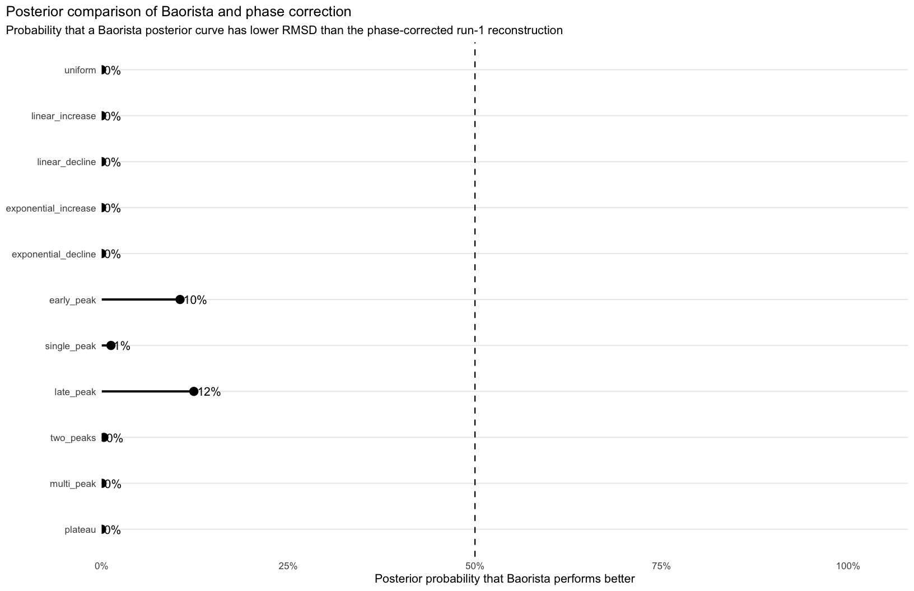
The draw-level comparison gives the same result. For 8 of the 11 signal patterns (all except early peak, single peak, late peak), the share of the 2,000 sampled Baorista posterior curves that achieve a lower RMSD than the phase-corrected run-1 reconstruction is below 0.5% (shown as 0% in the table). The corresponding probability is only 1% for the single peak and rises to 10% and 12% for the early- and late-peak scenarios, respectively. Thus, even in the scenarios most favourable to Baorista, the large majority of its posterior reconstructions remain further from the known signal than the phase-corrected point estimate.
With only one fitted run per signal, this is no general comparison of the two approaches. It does show that the overlap effect persists in a richer probabilistic model and has to be addressed whatever the inferential framework.
For each run we determine the method with the lowest RMSD.
These summaries are based on the repeated aoristic simulation runs. Baorista is not included here, as it has not been computed for the full set of simulation replicates. The table gives, for each signal pattern, the share of runs in which each method achieves the lowest RMSD.
s3_best_rmsd |>
select(pattern, method, best_share) |>
mutate(
pattern = factor(pattern, levels = signal_patterns),
method = factor(method, levels = c("Standard aoristic", "Monte Carlo mean", "Phase-corrected"))
) |>
arrange(method) |>
pivot_wider(names_from = method, values_from = best_share, values_fill = 0) |>
arrange(pattern) |>
mutate(pattern = signal_labels[as.character(pattern)]) |>
rename(`Signal pattern` = pattern) |>
mutate(across(-`Signal pattern`, ~ sprintf("%.2f", .x))) |>
(\(d) kbl(d, align = c("l", rep("r", ncol(d) - 1))))()| Signal pattern | Standard aoristic | Monte Carlo mean | Phase-corrected |
|---|---|---|---|
| Uniform | 0.00 | 0.00 | 1.00 |
| Linear increase | 0.00 | 0.00 | 1.00 |
| Linear decline | 0.00 | 0.00 | 1.00 |
| Exponential increase | 0.00 | 0.00 | 1.00 |
| Exponential decline | 0.00 | 0.00 | 1.00 |
| Early peak | 0.00 | 0.01 | 0.99 |
| Single central peak | 0.54 | 0.46 | 0.00 |
| Late peak | 0.01 | 0.06 | 0.93 |
| Two peaks | 0.00 | 0.00 | 1.00 |
| Multiple peaks | 0.06 | 0.06 | 0.88 |
| Plateau | 0.54 | 0.46 | 0.00 |
p_best_rmsd <- s3_best_rmsd |>
mutate(
pattern = factor(pattern, levels = signal_patterns),
method = factor(
method,
levels = c("Standard aoristic", "Monte Carlo mean", "Phase-corrected")
)
) |>
ggplot(aes(x = pattern, y = best_share, fill = method)) +
geom_col(position = "stack") +
scale_x_discrete(labels = signal_labels) +
coord_flip() +
labs(title = "Best method by simulation run",
subtitle = "Best = lowest RMSD against known ground truth", x = NULL,
y = "Share of runs") +
plot_theme(base_size = 8)
p_best_rmsd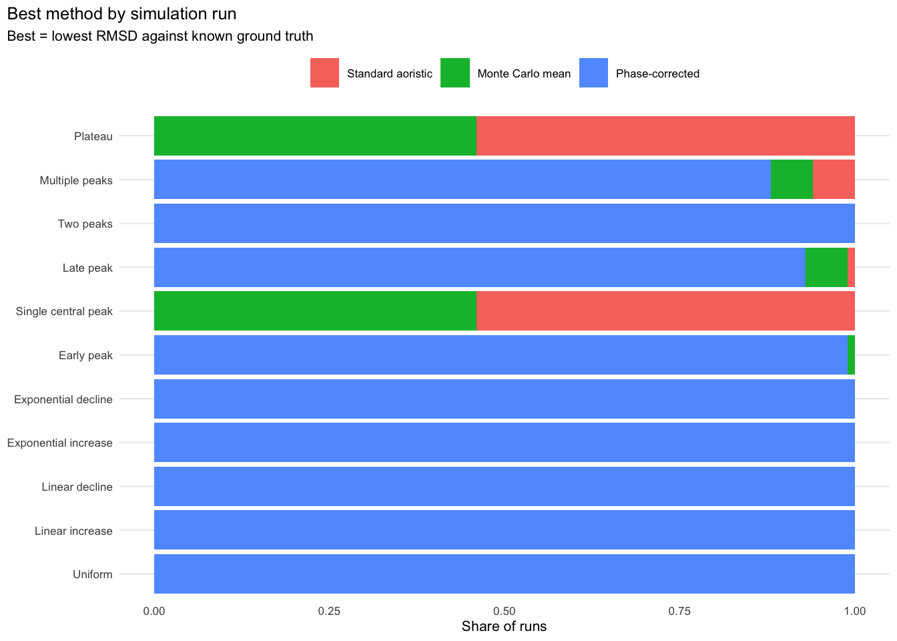
The phase-corrected method should perform best where the standard proportional aoristic reconstruction is strongly affected by the artificial overlap structure, and less well where the true signal itself closely follows the overlap structure. In applications, plotting the overlap curve against the standard reconstruction shows how strongly the latter is coupled to the classification.
The phase correction performs well across most of the scenarios tested. It is systematically outperformed in only 2 of the 11 signal patterns (the central single peak and the plateau), in which the ground truth closely resembles the overlap structure. For the early and late peaks, its advantage is small. How these results change under other assignment models is examined in Supplement 6 and summarised in the Interpretation below.
We measure the coupling of the error to the phase catalogue with the overlap-attributable RMSD, \(|\mathrm{cor}(E, \lambda)| \cdot \mathrm{sd}(E)\): the root-mean-square size of the part of the reconstruction error \(E(t)\) that varies linearly with the overlap curve, on the same scale as the RMSD (see Supplement 2).
Lower values indicate less systematic dependence of the reconstruction error on the overlap structure of the phase catalogue.
p_overlap_bias <- ggplot(metrics_plot,
aes(x = method, y = overlap_attributable_rmsd)) +
geom_boxplot(outlier.alpha = 0.25) +
facet_wrap(~ pattern, scales = "free_y", labeller = as_labeller(signal_labels)) +
labs(
title = "Coupling between reconstruction error and phase overlap",
subtitle = "Lower values indicate less structural dependence on the phase catalogue",
x = NULL,
y = "Overlap-attributable RMSD"
) +
plot_theme(base_size = 8) +
theme(axis.text.x = element_text(angle = 45, hjust = 1),
legend.position = "none")
p_overlap_bias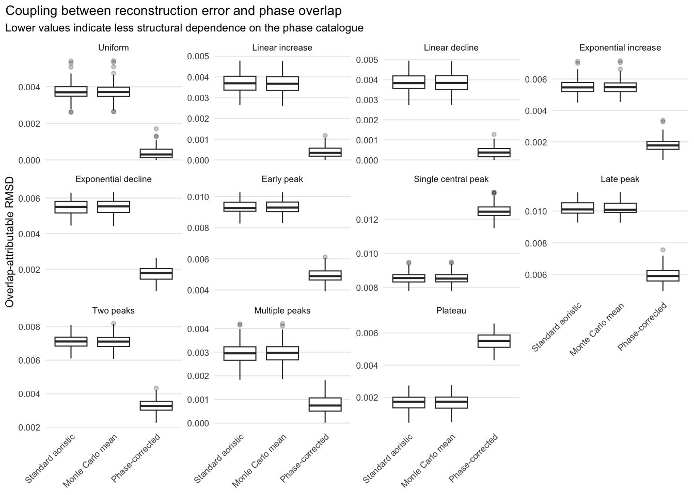
s3_best_overlap_bias |>
select(pattern, method, best_share) |>
mutate(
pattern = factor(pattern, levels = signal_patterns),
method = factor(method, levels = c("Standard aoristic", "Monte Carlo mean", "Phase-corrected"))
) |>
arrange(method) |>
pivot_wider(names_from = method, values_from = best_share, values_fill = 0) |>
arrange(pattern) |>
mutate(pattern = signal_labels[as.character(pattern)]) |>
rename(`Signal pattern` = pattern) |>
mutate(across(-`Signal pattern`, ~ sprintf("%.2f", .x))) |>
(\(d) kbl(d, align = c("l", rep("r", ncol(d) - 1))))()| Signal pattern | Standard aoristic | Monte Carlo mean | Phase-corrected |
|---|---|---|---|
| Uniform | 0.00 | 0.00 | 1.00 |
| Linear increase | 0.00 | 0.00 | 1.00 |
| Linear decline | 0.00 | 0.00 | 1.00 |
| Exponential increase | 0.00 | 0.00 | 1.00 |
| Exponential decline | 0.00 | 0.00 | 1.00 |
| Early peak | 0.00 | 0.00 | 1.00 |
| Single central peak | 0.48 | 0.52 | 0.00 |
| Late peak | 0.00 | 0.00 | 1.00 |
| Two peaks | 0.00 | 0.00 | 1.00 |
| Multiple peaks | 0.00 | 0.00 | 1.00 |
| Plateau | 0.54 | 0.46 | 0.00 |
p_best_overlap <- s3_best_overlap_bias |>
mutate(
pattern = factor(pattern, levels = signal_patterns),
method = factor(
method,
levels = c("Standard aoristic", "Monte Carlo mean", "Phase-corrected")
)
) |>
ggplot(aes(x = pattern, y = best_share, fill = method)) +
geom_col(position = "stack") +
scale_x_discrete(labels = signal_labels) +
coord_flip() +
labs(title = "Best method by overlap-attributable RMSD",
subtitle = "Best = lowest overlap-attributable RMSD", x = NULL,
y = "Share of runs") +
plot_theme(base_size = 8)
p_best_overlap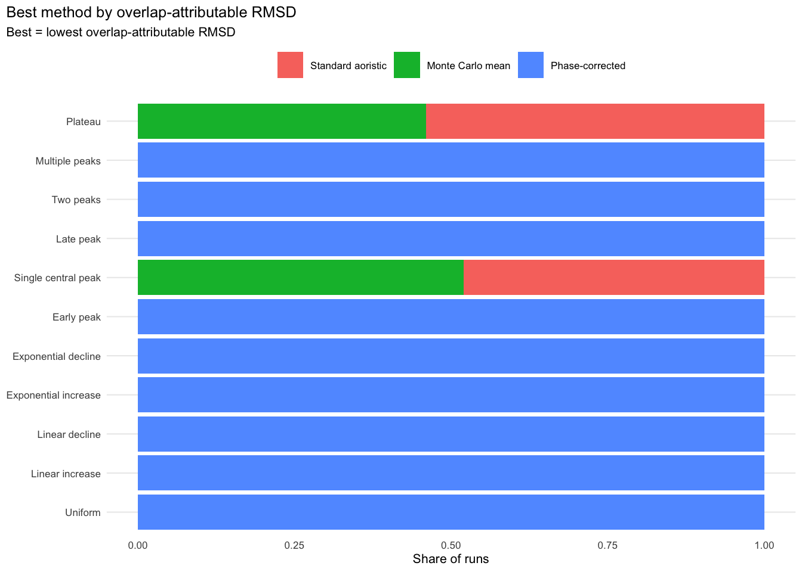
In most cases, the phase-corrected aoristic reconstruction reduces the coupling between overlap structure and reconstruction error. Only where the ground-truth signal coincides with the overlap structure (the central single peak and the plateau) does it again perform worse, and there it underestimates the actual pattern.
For each signal pattern, the table gives the median over all runs of the RMSD, the overlap-attributable RMSD (both ×1000) and the overlap-aligned relative amplitude (the change in reconstructed density, as a fraction of the mean density, per standard deviation of overlap, see Supplement 2). The Monte Carlo mean is omitted because its values are practically identical to those of the standard reconstruction. All values, including MAE and the correlation with the truth, are contained in outputs/s3_sensitivity_summary.csv.
s3_metrics |>
recode_s3_method_names() |>
filter(method %in% c("Standard aoristic", "Phase-corrected")) |>
group_by(pattern, method) |>
summarise(rmsd = 1000 * median(rmsd, na.rm = TRUE),
oa_rmsd = 1000 * median(overlap_attributable_rmsd, na.rm = TRUE),
amplitude = median(overlap_relative_amplitude, na.rm = TRUE),
.groups = "drop") |>
mutate(method = if_else(method == "Phase-corrected", "pc", "std")) |>
pivot_wider(names_from = method, values_from = c(rmsd, oa_rmsd, amplitude)) |>
mutate(
pattern = factor(pattern, levels = signal_patterns),
across(c(starts_with("rmsd"), starts_with("oa_rmsd")), ~ round(.x, 2)),
across(starts_with("amplitude"), ~ round(.x, 3))
) |>
arrange(pattern) |>
mutate(pattern = signal_labels[as.character(pattern)]) |>
select(pattern, rmsd_std, rmsd_pc, oa_rmsd_std, oa_rmsd_pc, amplitude_std, amplitude_pc) |>
kbl(
col.names = c("Signal pattern", "RMSD std.", "RMSD p.-c.",
"Ovl. RMSD std.", "Ovl. RMSD p.-c.",
"Ampl. std.", "Ampl. p.-c.")
)| Signal pattern | RMSD std. | RMSD p.-c. | Ovl. RMSD std. | Ovl. RMSD p.-c. | Ampl. std. | Ampl. p.-c. |
|---|---|---|---|---|---|---|
| Uniform | 3.88 | 0.96 | 3.69 | 0.30 | 0.170 | 0.014 |
| Linear increase | 5.51 | 3.59 | 3.69 | 0.34 | 0.170 | 0.015 |
| Linear decline | 5.84 | 3.76 | 3.83 | 0.37 | 0.176 | 0.017 |
| Exponential increase | 8.33 | 5.75 | 5.47 | 1.77 | 0.073 | 0.097 |
| Exponential decline | 8.43 | 5.81 | 5.51 | 1.78 | 0.074 | 0.097 |
| Early peak | 19.33 | 18.76 | 9.26 | 4.89 | 0.031 | 0.232 |
| Single central peak | 11.19 | 14.86 | 8.56 | 12.43 | 0.697 | 0.519 |
| Late peak | 18.94 | 18.40 | 10.10 | 5.91 | 0.101 | 0.294 |
| Two peaks | 13.85 | 11.98 | 7.11 | 3.28 | 0.125 | 0.051 |
| Multiple peaks | 9.16 | 8.92 | 2.95 | 0.74 | 0.165 | 0.016 |
| Plateau | 5.91 | 7.23 | 1.74 | 5.51 | 0.488 | 0.315 |
std. = standard aoristic, p.-c. = phase-corrected, Ovl. RMSD = overlap-attributable RMSD, Ampl. = overlap-aligned relative amplitude.
For some non-uniform signals (the exponential trends and the early and late peaks), the overlap-aligned relative amplitude of the phase-corrected reconstruction is larger than that of the standard reconstruction, although its overlap-attributable RMSD is smaller. The two results are compatible, because the relative amplitude is computed from the reconstructed curve itself. Under a non-uniform ground truth it therefore also captures genuine signal that happens to be aligned with the overlap curve, and it is not a pure measure of bias. Only in the uniform case, where any overlap-aligned structure is necessarily artificial, can it be read directly as bias. For non-uniform signals, the relevant bias measure is the error-based overlap-attributable RMSD.
The advantage of the phase correction carries over from the uniform case to most non-uniform signals. It performs better than or as well as the standard reconstruction in most scenarios, with clear gains for monotonic, exponential and two-peaked signals and small gains for the early, late and multiple peaks.
Its limits follow from its assumptions. Like the standard reconstruction, it assumes a uniform distribution within each interval, which does not hold for a structured signal in which events are more probable at the beginning than at the end of an interval, or vice versa. In addition, the phase correction dampens a signal that coincides with the temporal structure of the phase catalogue, as in the central-peak and plateau scenarios. Finally, the simulations use the assignment model under which the correction is exact. Supplement 6 shows that most of the advantage remains under other assignment models. For the early, late and multiple peaks, the correction is then approximately neutral, and in a few combinations slightly worse than the standard reconstruction, namely for the early and late peaks under a preference for broad labels, and for the multi-peak signal under a preference for narrow labels or fixed level weights.
The correction is most useful where peaks or trends may be shaped by the classification, but it does not replace a full model of the dating process.
For empirical studies, it follows that the phase-corrected reconstruction should be reported routinely alongside the standard one, together with the overlap structure of the phase catalogue. Where the standard reconstruction is strongly coupled to the overlap structure, the corrected curve is the better-founded estimate. Where the two reconstructions differ in parts of the sequence in which the true signal may plausibly be concentrated, both should be reported and the difference discussed.
Supplements 4 and 5 apply the methods to empirical data.
sessionInfo()R version 4.5.3 (2026-03-11)
Platform: aarch64-apple-darwin20
Running under: macOS 27.2
Matrix products: default
BLAS: /Library/Frameworks/R.framework/Versions/4.5-arm64/Resources/lib/libRblas.0.dylib
LAPACK: /Library/Frameworks/R.framework/Versions/4.5-arm64/Resources/lib/libRlapack.dylib; LAPACK version 3.12.1
locale:
[1] en_US.UTF-8/en_US.UTF-8/en_US.UTF-8/C/en_US.UTF-8/en_US.UTF-8
time zone: Europe/Berlin
tzcode source: internal
attached base packages:
[1] stats graphics grDevices datasets utils methods base
other attached packages:
[1] rlang_1.3.0 readr_2.1.6 tibble_3.3.1 purrr_1.2.0 ggplot2_4.0.3
[6] tidyr_1.3.1 dplyr_1.2.1
loaded via a namespace (and not attached):
[1] bit_4.6.0 gtable_0.3.6 jsonlite_2.0.0 crayon_1.5.3
[5] compiler_4.5.3 renv_1.2.0 tidyselect_1.2.1 parallel_4.5.3
[9] scales_1.4.0 yaml_2.3.12 fastmap_1.2.0 R6_2.6.1
[13] labeling_0.4.3 generics_0.1.4 knitr_1.50 pillar_1.11.1
[17] RColorBrewer_1.1-3 tzdb_0.5.0 xfun_0.54 S7_0.2.2
[21] bit64_4.6.0-1 cli_3.6.6 withr_3.0.3 magrittr_2.0.5
[25] digest_0.6.39 grid_4.5.3 vroom_1.6.7 hms_1.1.4
[29] lifecycle_1.0.5 vctrs_0.7.3 evaluate_1.0.5 glue_1.8.1
[33] farver_2.1.2 rmarkdown_2.30 tools_4.5.3 pkgconfig_2.0.3
[37] htmltools_0.5.9